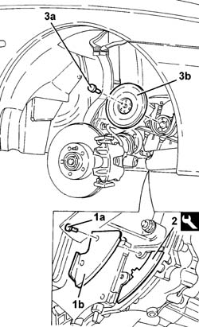
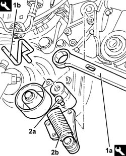

1092G15 Engine components single belt MOVING TENSIONER - R.R. with belt removed
- Path
- Procedures > 10 ENGINE > 1092 engine component miscellaneous drives > 1092G single drive belt for various engine components > 1092G15 Engine components single belt MOVING TENSIONER - R.R. with belt removed
- Kind
- repair procedure (removal / refitting; the operation number is the code)
- Applies to
- engines: 2.4 JTD 10V; all production periods
- Interactive page
- https://sloeber94.github.io/elrnDB-lThss/en/#/104817
Applies to: all engines; all production periods
 Removing
Removing
 Refitting
Refitting1. Undo the bolts (1a) and remove the lower flywheel guard (1b).
2. Fit the flywheel lock.
 | Description | Code | Function |
|---|---|---|---|
. | Counter-torque | 1.860.898.000 | Locking crankshaft pulley rotation |
3. Undo the fixing bolts (3a) and remove the auxiliary shaft drive pulley (3b).

Applies to: all engines; all production periods
1. Remove the pin (1b) using the tool (1a) on the moving tensioner.
| Description | Code | Function |
|---|---|---|---|
1a | Spanner | 1.860.968.000 | Tensioning auxiliary shaft belt |
| Description | Code | Function |
|---|---|---|---|
1b | Lock | 1.870.645.000 | Automatic belt tensioner retainer for single components belt |
2. Undo the fixing bolt (2a) and remove the services belt moving belt tensioner (2b).

Applies to: all engines; all production periods
Refitting
Removing- Fit the auxiliary shaft drive belt moving tensioner.
- Tighten the fixing bolts to torque.
 | Value - daNm | Fastening | Component | Ø |
|---|---|---|---|---|
. | 2.5 | Bolts | SINGLE BELT MOVING TENSIONER VARIOUS | M8 |
| Value - daNm | Fastening | Component | Ø |
|---|---|---|---|---|
. | 6 | Bolts | SINGLE BELT MOVING TENSIONER VARIOUS | M10 |
- Fit the moving tensioner spring pre-loading pin acting on the moving tensioner using the tool.
- Fit the auxiliary shaft drive pulley.
- Tighten the bolts fixing the crankshaft pulley to torque.
| Value - daNm | Fastening | Component | Ø |
|---|---|---|---|---|
. | 2.5 | Bolt | CRANKSHAFT PULLEY | M8 |
- Remove the flywheel lock.
| Description | Code | Function |
|---|---|---|---|
. | Counter-torque | 1.860.898.000 | Flywheel lock |
- Fit the lower flywheel guard.